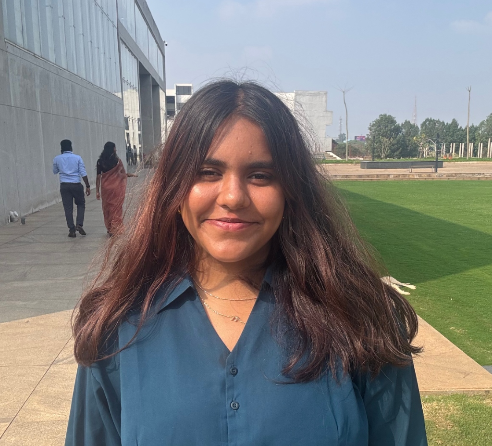

Currently serving as Senior Executive at Woxsen Japan Centre while pursuing B.Tech in Data Science at Woxsen University. My academic journey deepened through an exchange at Universidade de Vigo, Spain.
As Executive of Spectrum (Science Club), Peer Mentor, and Google Developer Groups member, I create meaningful STEM experiences. Passionate about AI, space, football, and cross-cultural collaboration.
A growing toolkit at the intersection of data science, engineering, and human communication.